《Oh!爸媽》網頁
原文刊於 2026年5月28日，分類「教育熱話」。下文同相片按當日網頁抄錄，方便校內查閱。原文用字（飄移車、板手、剎車）保持不變。
佛教志蓮小學｜禮堂變賽車場 學生親手砌飄移車、滑板 校內飆車實踐科學原理
STEAM 教育如何讓學生玩得投入、學得深刻？佛教志蓮小學打破傳統書本教學框架，將真實工程思維與科學實戰帶入校園。學校把禮堂搖身變成賽車專屬賽道，讓學生親手扭螺絲、組裝屬於自己的飄移車及滑板，透過實地試玩、速度測試，親身感受摩擦力、動力、飄移等抽象科學原理。學生不再被動接收知識，而是從「動手做、親自試、自主探究」中了解科學概念，更進一步利用 AI 製作遊戲延伸學習，全方位拓展思維，真正做到跳出課本、邊玩邊學。
以工程實務經驗深耕 STEAM 教育
位於將軍澳的佛教志蓮小學着重於「跨學科融合」與「生活應用」，透過探究式專題研習，培育學生的創意思考與解難能力，並賦予他們應對廿一世紀挑戰所需的素養。科學科張智聰老師大學修讀工程學位，並具備工程實務經驗，他深信「科學不應停留在書本，而應在實踐中體現」，於是他將專業的 PDIR (Plan-Do-Improve-Review) 工程循環模式簡化並導入課堂，分三階段讓同學實踐科學的原理。
第一階段：落手做——從零件打造座駕
課程的首要任務是讓學生「拿起工具」！在老師的指導下，學生由零開始認識支架、軸承及板面結構，學習正確使用螺絲批與板手進行緊固。張老師強調：「在小學推行STEAM時，工程環節往往因技術門檻難以落實，我想鼓勵學生落手落腳解決工程問題。」
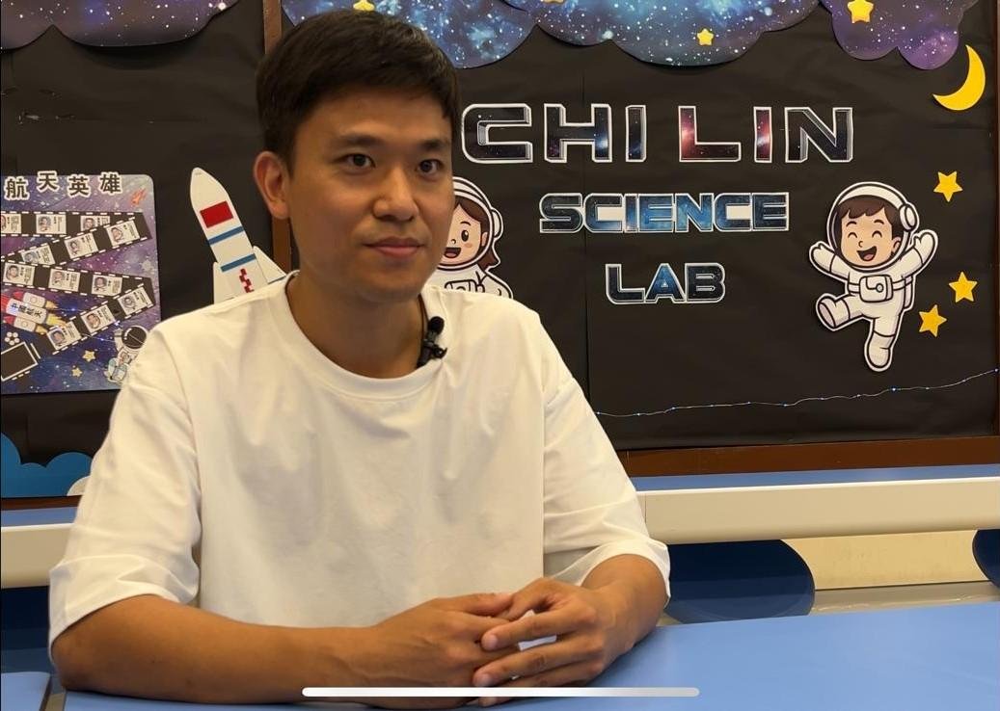
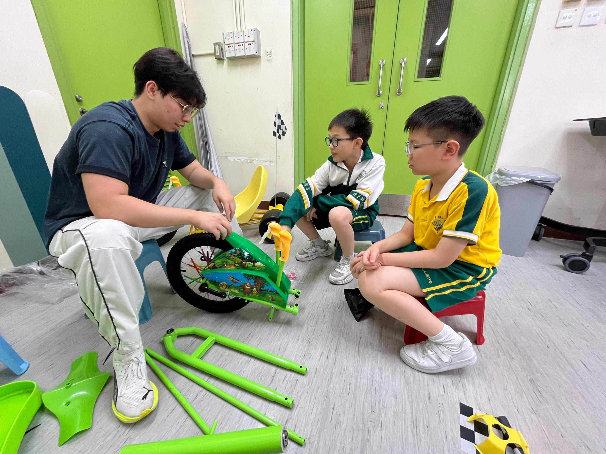
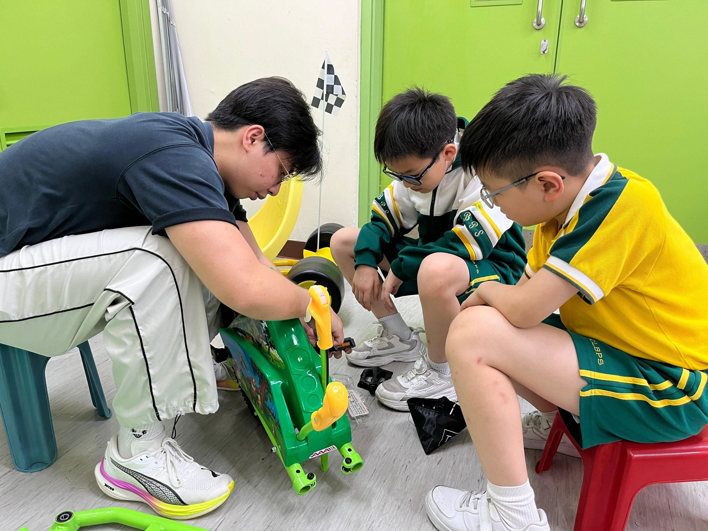
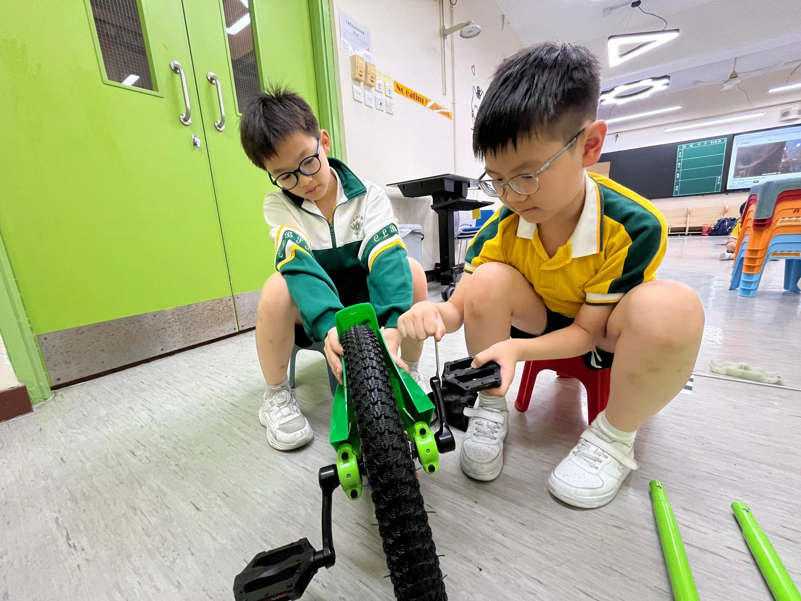
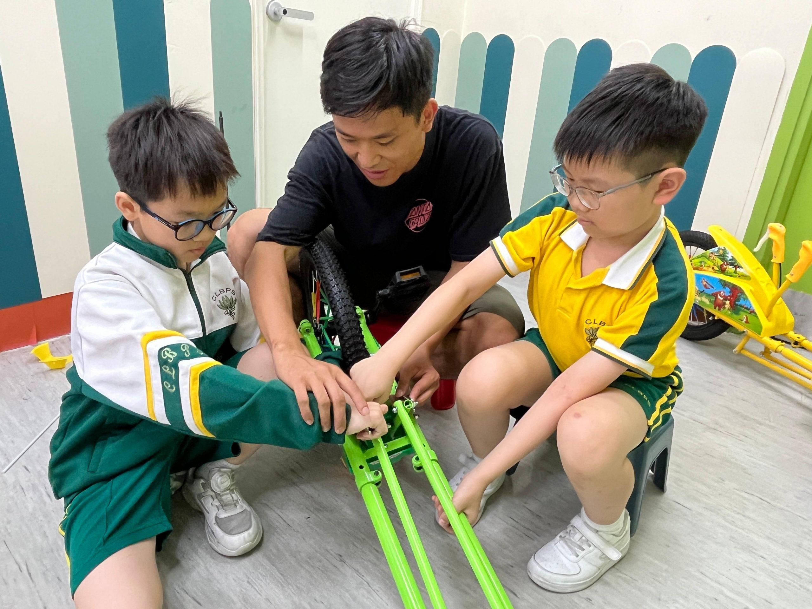
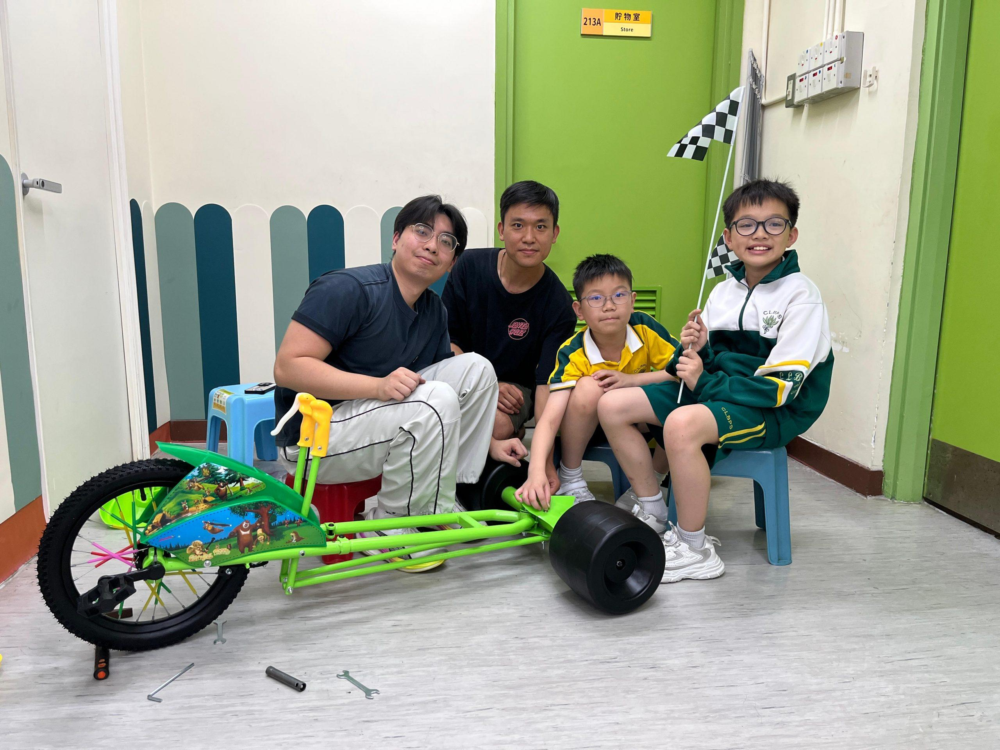
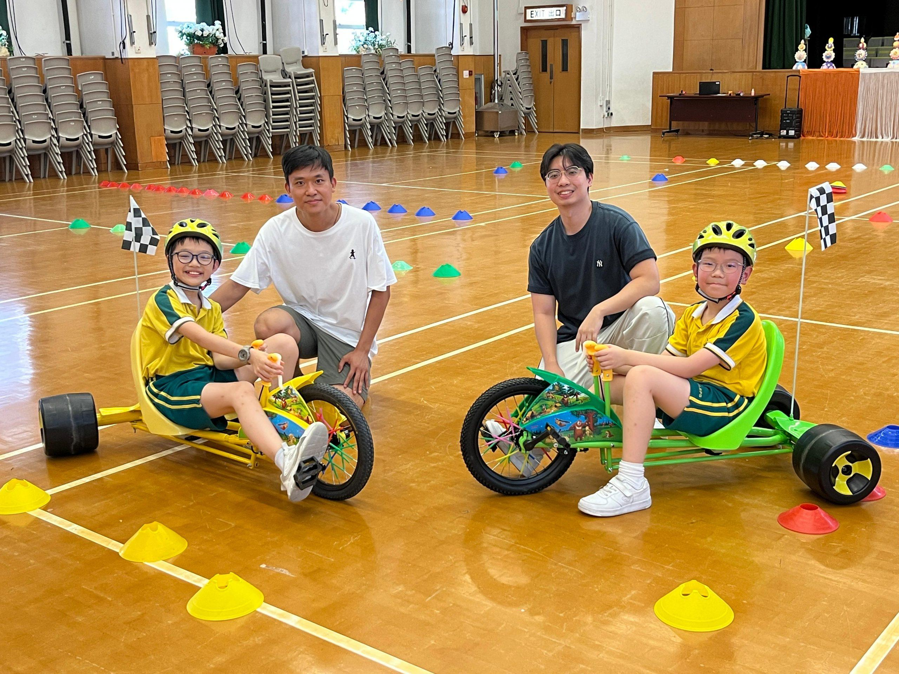
第二階段：親身玩——影像拆解「飄移」科學
組裝完成後，禮堂即變身成賽車場，實地測試「飄移」科學。
除了飄移車外，老師利用攝影器材記錄校內「滑板仔學生」示範的花式動作 Power Slide（橫滑剎車），學生透過慢鏡頭回放，事後解釋漂移背後的科學原理，認識摩擦力轉換。
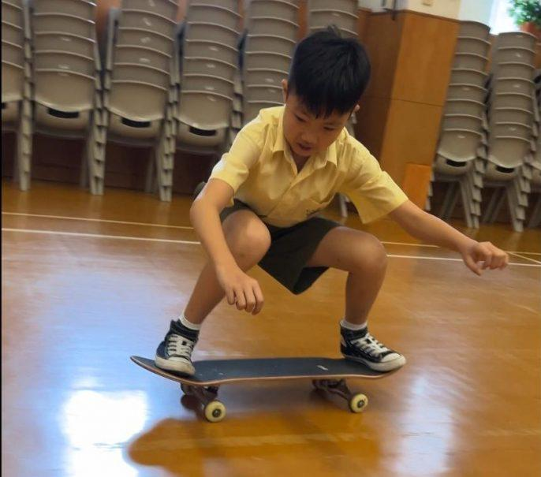
第三階段：延伸學習——製作 AI 遊戲深化理論
實戰完後，張老師再利用 AI 製作力學遊戲，學生透過打機的方式過關斬將回答有關摩擦力問題，讓小朋友寓打機於學習。張老師分享道，將工程專業背景轉化為教學養分，是為了訓練學生的解難能力：「當孩子能習慣性地應用 Plan-Do-Improve-Review 的邏輯去解決問題，無論未來面對更複雜的學科，都能冷靜應對。」
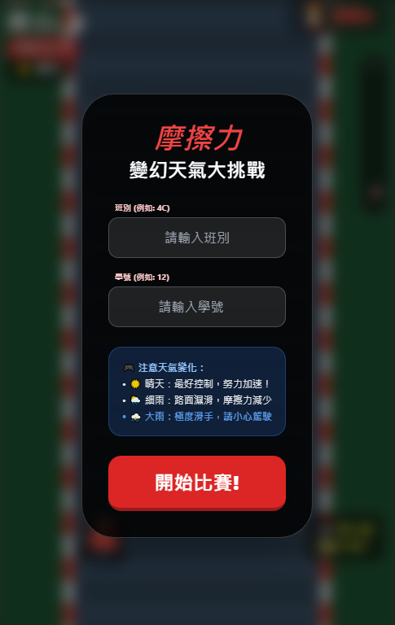
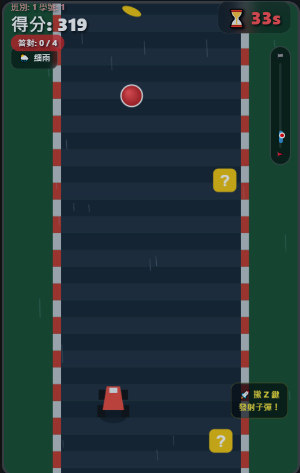
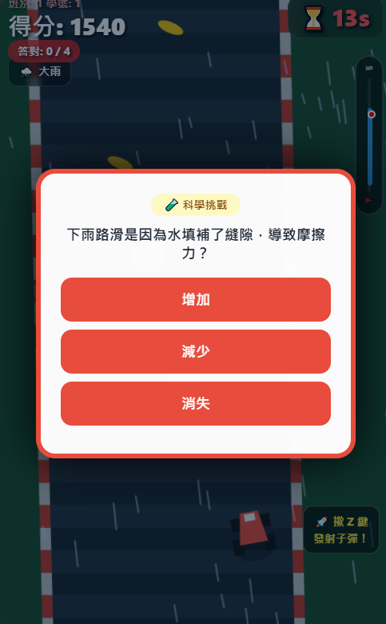